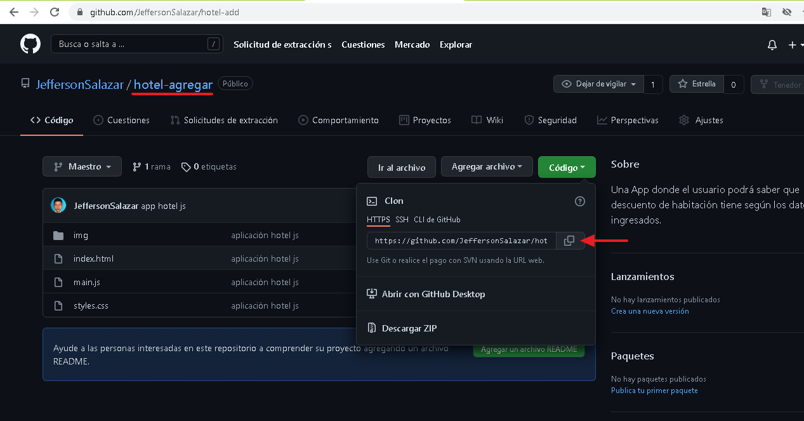
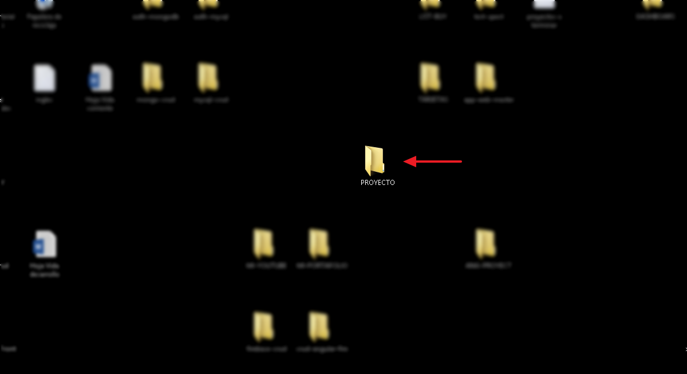
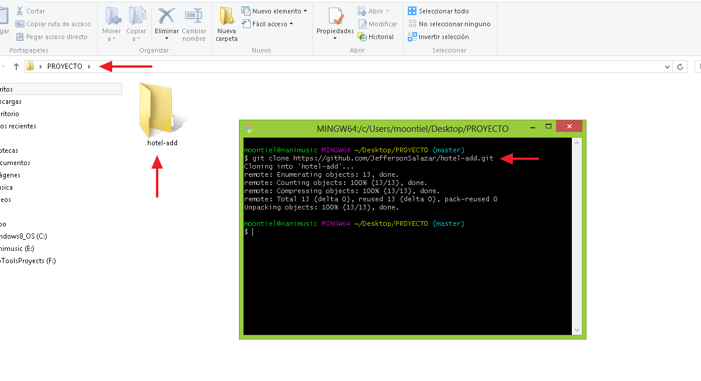
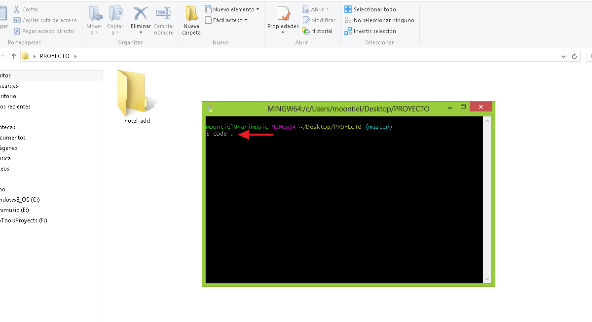
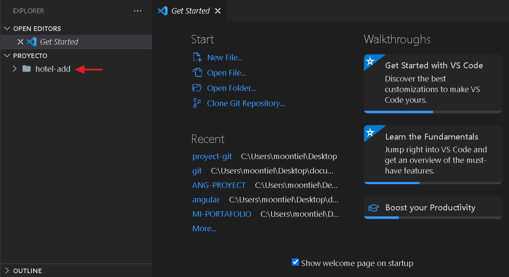

06. Git clone
Aprendamos a clonar un repositorio haciendo uso de la consola de comandos git bash Finalmente veremos como abrir un proyecto desde la misma.
01. Url del repositorio (github)

02. Carpeta contenedor

03. Git clone "url": Clona el repositorio

04. code .: Abriendo el proyecto con VSC

05. Vista del proeycto

End Git Clone